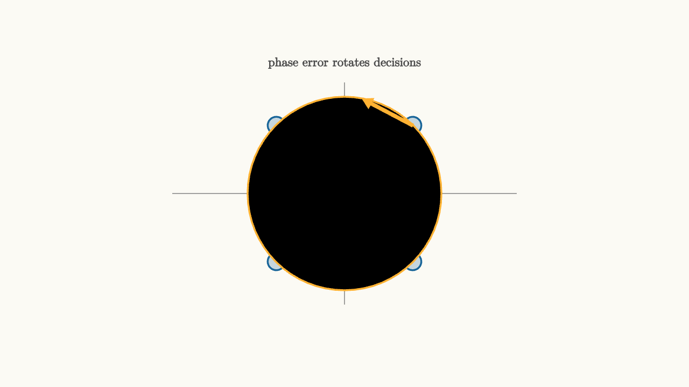

Carrier Sync Turns A Spinning Cloud
In a QAM receiver, symbols are points in the $I,Q$ plane. The transmitter draws the constellation using its carrier reference. The receiver draws its own coordinate axes using a local oscillator.
If those references disagree, the constellation rotates.
A constant phase error turns the whole constellation by a fixed angle. A frequency error makes the angle change over time. The receiver then sees a spinning cloud instead of stable points.

source
background = [0.985, 0.98, 0.955, 1]
camera = Camera(4.8b)
let Dot = |x, y, col| center{[x, y, 0]} fill{alpha{0.24} col} stroke{col, 2} Circle(0.12)
mesh diagram = block {
. stroke{GRAY, 1} Line(start: [-2.4, 0, 0], end: [2.4, 0, 0])
. stroke{GRAY, 1} Line(start: [0, -1.55, 0], end: [0, 1.55, 0])
. Dot(x: -0.95, y: -0.95, col: BLUE)
. Dot(x: -0.95, y: 0.95, col: BLUE)
. Dot(x: 0.95, y: -0.95, col: BLUE)
. Dot(x: 0.95, y: 0.95, col: BLUE)
. stroke{ORANGE, 2} Circle(1.35)
. color{ORANGE} Arrow(start: [0.95, 0.95, 0], end: [0.25, 1.32, 0])
. center{[0, 1.82, 0]} color{DARK_GRAY} Text("phase error rotates decisions", 0.62)
}
"rotated constellation"
play Fade(0.6)The passband signal can be written as
The receiver downconverts with its own oscillator. If that oscillator has phase error $\theta$, the recovered complex baseband is multiplied by
If there is a frequency offset $\Delta f$, the phase changes over time:
That is the spinning cloud.
Pilots and decisions create a compass
Carrier recovery needs a reference. Many systems insert known pilot symbols or preamble symbols. The receiver compares the observed pilot phase with the known pilot phase and estimates the correction.
After the receiver is close, it can also use decision-directed tracking. It decides which constellation point was most likely sent, measures the residual angle from that point, and nudges the local oscillator.
The loop has to be careful. If early decisions are wrong, decision-directed updates can reinforce the wrong phase. Good receivers use pilots, preambles, loop filters, and lock detectors to manage that risk.
source
param phase = 0.9
background = [0.985, 0.98, 0.955, 1]
camera = Camera(4.8b)
let Cloud = |phase, col| block {
. stroke{LIGHT_GRAY, 1} Line(start: [-2.5, 0, 0], end: [2.5, 0, 0])
. stroke{LIGHT_GRAY, 1} Line(start: [0, -1.55, 0], end: [0, 1.55, 0])
. center{[2.25, -0.25, 0]} color{GRAY} Text("I", 0.62)
. center{[0.32, 1.35, 0]} color{GRAY} Text("Q", 0.62)
. fill{alpha{0.22} col} stroke{col, 2} center{[1.05 * cos(phase) - 1.05 * sin(phase), 1.05 * sin(phase) + 1.05 * cos(phase), 0]} Circle(0.12)
. fill{alpha{0.22} col} stroke{col, 2} center{[-1.05 * cos(phase) - 1.05 * sin(phase), -1.05 * sin(phase) + 1.05 * cos(phase), 0]} Circle(0.12)
. fill{alpha{0.22} col} stroke{col, 2} center{[-1.05 * cos(phase) + 1.05 * sin(phase), -1.05 * sin(phase) - 1.05 * cos(phase), 0]} Circle(0.12)
. fill{alpha{0.22} col} stroke{col, 2} center{[1.05 * cos(phase) + 1.05 * sin(phase), 1.05 * sin(phase) - 1.05 * cos(phase), 0]} Circle(0.12)
}
"phase error"
mesh title = center{[0, 1.72, 0]} color{DARK_GRAY} Text("carrier recovery rotates axes back", 0.62)
mesh cloud = Cloud(phase: $phase, col: ORANGE)
mesh label = center{[0, -1.75, 0]} color{DARK_GRAY} Text("unlocked: decisions spin", 0.62)
play Write(0.8)
play Grow(0.7)
play Fade(0.3)
"lock"
phase = 0.0
cloud = Cloud(phase: $phase, col: GREEN)
label = center{[0, -1.75, 0]} color{DARK_GRAY} Text("locked: points sit in decision regions", 0.62)
play Lerp(1.2)
"frequency offset"
phase = 1.35
cloud = Cloud(phase: $phase, col: RED)
label = center{[0, -1.75, 0]} color{RED} Text("frequency offset keeps phase moving", 0.62)
play Lerp(1.0)The parameter is a phase angle. Drag it and the constellation rotates. Carrier synchronization is the loop that drives that angle toward zero and keeps it there.
Why small errors matter
For BPSK, a phase error reduces the distance to the decision threshold. For QPSK, it tilts points toward the wrong quadrant. For higher-order QAM, points are close together, so a modest phase error can cross a decision boundary.
Frequency error is worse because it accumulates. Even if one symbol is decoded correctly, the next one may have a larger phase error. A receiver must estimate and remove frequency offset before or during phase tracking.
Carrier sync is a coordinate recovery problem
The transmitter and receiver need a shared coordinate system. The physical wave does not carry labeled axes. It carries oscillation. Carrier synchronization reconstructs the axes from pilots, preambles, and constellation structure.
Once the axes are stable, the receiver can make symbol decisions in the intended geometry. Then frame synchronization can solve a different problem: where does a packet begin?